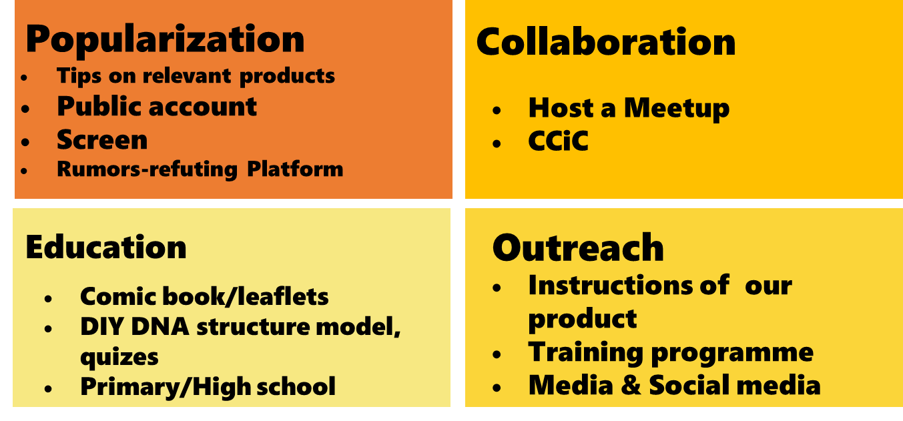
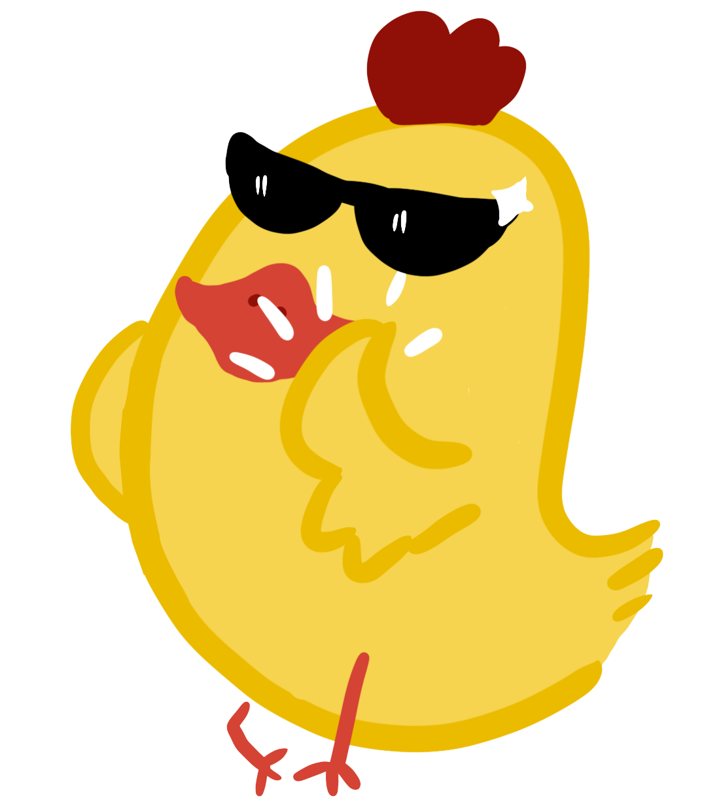
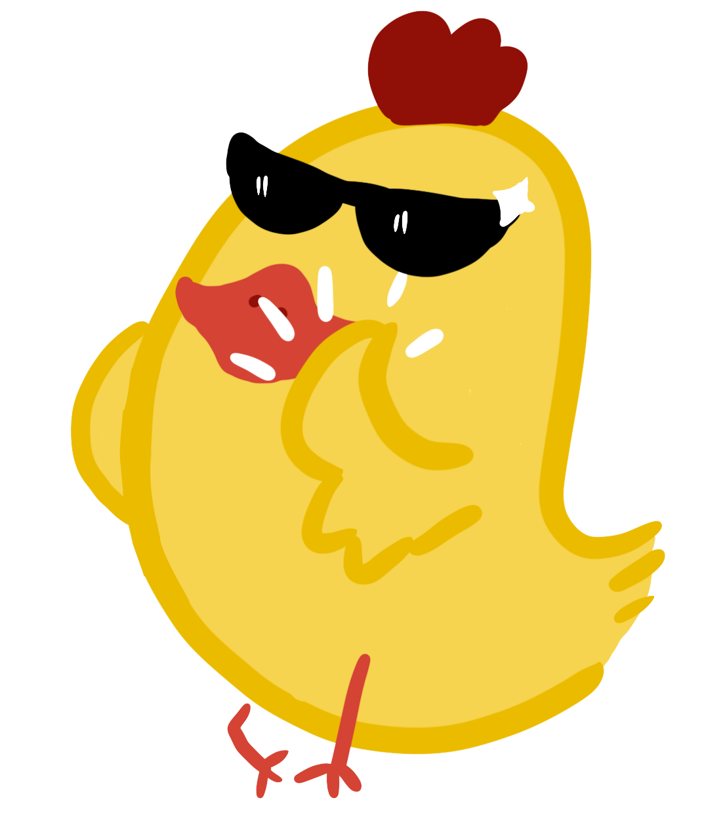
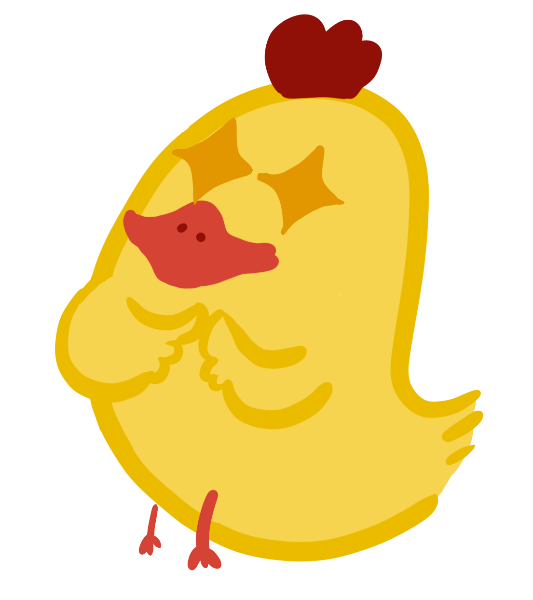
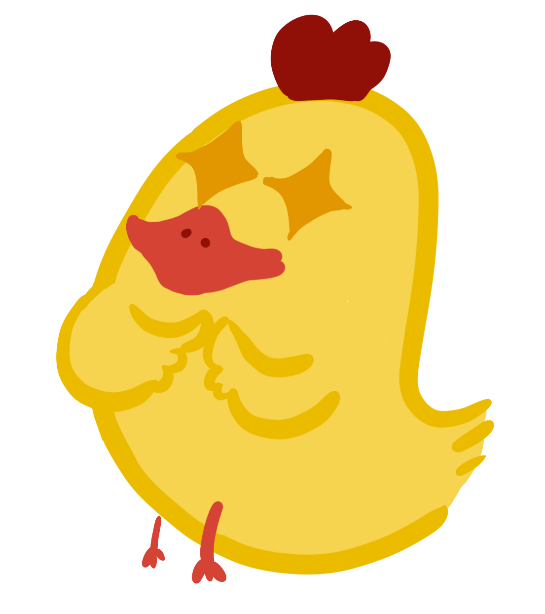

Overview
In China, despite the increasing public concern about the scientific development, there exists huge gap between scientists and the public, the public wonder what is the correct explanation of scientific phenomenon, for example. To bridge the gap, we devided our human practice into four parts as follows:

Popularization
According to a survey on college students’s understanding of use ofantibiotic in China in 2018 , 37.8% of subjects have a misconcept of the treatment effect of antibiotic therapy , 41.0% think that antibiotics function better in flu therapy.The survey can only reflect the tip of the iceberg concerning public perception of antibacterial and biology. Thus, it is of great importance to probe into the public awareness situation in the country, as well as spread the general knowledge of rational use of antibiotics.
Eggs are common media to transmitt the Salmonella. We contacted an eggs processing plant and attached a piece of tag on relevant products. On the tag, there are some general knowledge related to Salmonellosis, like how to deal with the food to avoid possible infection.
Popularization has been more relied on online media nowdays. Since scientific knowledge can be misunderstood by some people in China due to clutterd information, we established a public platform to refute the rumors related to some basic biological knowledge. To build up the credit and maximize the accuracy, we may have a discussion with our teachers and never release hasty information.
Education
Chinese children have been exposed to a more open study environment these days. To cultivate their curiosity about biology, we designed a set of comic books and organized an educational activity in Science & Technolgy Museum of Zhejiang Province, including building DNA model and quizes.Besides, we gave lectures in local primary school.
Colleration
We hosted a Meet-up with some highschool students and communicated with other igem teams in CciC, especially teams focused on ABR.
Outreach
Except our education&public engagement, we designed a protocols for users coupled with a dosing equippment. We provided on-site or online training problems to teach them how to apply our medicine in the industry.


 

 
